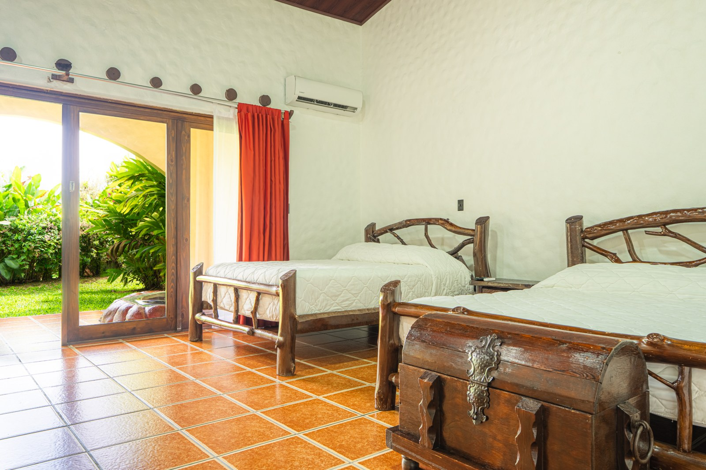

RAINFOREST RESORTS
A Costa Rican resort family


A note from Chachagua
A familiar welcome.
A sister property to discover.
Dear Chachagua community,
If Chachagua is part of your Costa Rica story, we have a new chapter to share. Rainforest Resorts is the Costa Rican resort family bringing together Chachagua Rainforest Resort & Hot Springs and our sister property, Arenal Rainforest Resort. Two places to stay, with a shared approach: listen first, choose thoughtfully, and leave time to enjoy the journey.
Our Travel Designers are local advisers who help shape accommodation, experiences and practical arrangements around your interests. Stay at one resort or ask about combining both. Your plans can follow your pace.

Choose your place to return to
Two sister resorts. Distinct places to stay.
Chachagua Rainforest Resort & Hot Springs
Stay close to the forest in a collection of Casitas, Bungalows and Villas. Explore Two Bedroom Villa for shared time with room to yourselves, or discover Rainforest Bungalow, Jungle Tree House, River Villa and Casita Suite.
Looking for a private residence? Ask about Hacienda Cercone or La Fortuna Country House and the location that suits your plans.
Explore Chachagua staysArenal Rainforest Resort
Get to know Bungalow Arenal and One Bedroom Vista Arenal, two accommodation categories listed on our sister property’s website. Ask our team which category and unit fit your party and dates.

Arenal · Bungalow Arenal bedroom. Photographs and features are category-specific.
Explore Arenal staysOur editorial selection
12 experiences to shape your Costa Rica stay
Choose what interests you, then ask a Travel Designer how it fits your stay. A shared experience collection is being aligned across both resort websites. The links below currently open Chachagua’s experience pages; bookings from either resort require confirmation of operation and arrangements.
01
Daily Nature Walk
Location: Chachagua
Follow the forest with a guide, noticing plants, sounds and the small details that shape this living landscape.
Explore this experience →02
Birdwatching Tour
Location: Chachagua
Bring your curiosity to Chachagua’s reserve and explore its birdlife with a guide. Sightings follow nature, so no particular species is promised.
Explore this experience →03
Rainforest Night Walk
Location: Chachagua
Discover the forest after dark, when listening and careful observation reveal another side of the surroundings. Ask which route and conditions suit your group.
Explore this experience →04
Coffee & Chocolate Tour
Location: Chachagua
Explore the place of coffee, cacao and sugar cane in Costa Rican traditions. Share any dietary needs when planning participation and tastings.
Explore this experience →05
Horseback Riding Tour
Location: Chachagua
See the landscape at another pace on a horseback outing. The team will review riding experience, participation requirements and the route before you book.
Explore this experience →06
Children’s Eternal Rainforest Expedition
Location: Pocosol
Choose a forest-focused day at Pocosol, within the Children’s Eternal Rainforest. Plan for the journey, trail conditions and time away from your resort.
Explore this experience →07
Río Celeste Hike
Location: Tenorio
Explore the forest landscape of Tenorio Volcano National Park on a guided hike. Ask about the trail, weather conditions and the full excursion from your resort.
Explore this experience →08
Caño Negro Wildlife Boat Trip
Location: Caño Negro
Take to the water to observe a wetland environment, with birds and riverbank life to discover. Allow a full excursion window and confirm operating conditions.
Explore this experience →09
Ecoglide Canopy Tour
Location: La Fortuna
Experience the rainforest from platforms and cables at an external adventure park. Confirm the specific product, participation requirements and transport from your resort.
Explore this experience →10
Peñas Blancas Safari Float
Location: Peñas Blancas
Travel along calmer river sections on a guided raft outing, watching the banks for wildlife. This float is a different experience from white-water rafting.
Explore this experience →11
Canyoning Tour
Location: La Fortuna
For those drawn to water and heights, explore a canyoning outing in the La Fortuna area. Ask about the route, equipment and physical participation requirements.
Explore this experience →12
La Fortuna Waterfall Guided Hike
Location: La Fortuna
Make room for a guided visit to La Fortuna Waterfall. Ask about steps, physical effort, admission and the best arrangements for your party.
Explore this experience →Availability, guides, weather, age requirements, physical demands, admission and transport are checked for the specific booking. Wildlife sightings and clear volcano views are not guaranteed.
From the Chachagua blog
Introducing Rainforest Resorts: Chachagua and Arenal, Two Sister Properties
Meet the family and explore an optional six-night idea across the two properties. A combined itinerary is tailored and quoted for your dates; it is not a ready-made package.
Read the family storyComing next on the blog
Three Ways to Share the Rainforest Without Filling Every Hour
Planned for 2026-11-23
A Trip With Friends That Leaves Room for Different Paces
Planned for 2026-12-07
From Cacao to the Trail: Discovering the Rainforest as a Family
Planned for 2026-12-21
Planning an Arenal stay in 2027?
Arenal Rainforest Resort is renewing its accommodation and areas in stages. Construction or remodelling work will continue during 2027 and may cause noise or changes to areas and services. Features and renovation status vary by category and unit. Before confirming, our team will review the accommodation, expected work and operating services for your dates. Volcano visibility depends on weather and the specific location.
Let’s design your next chapter
Tell us your dates, who is travelling, and what you would love to discover. Our Travel Designers will help you choose one resort or a stay across both, with the details explained before you book.
Rainforest Resorts · Costa Rica your way